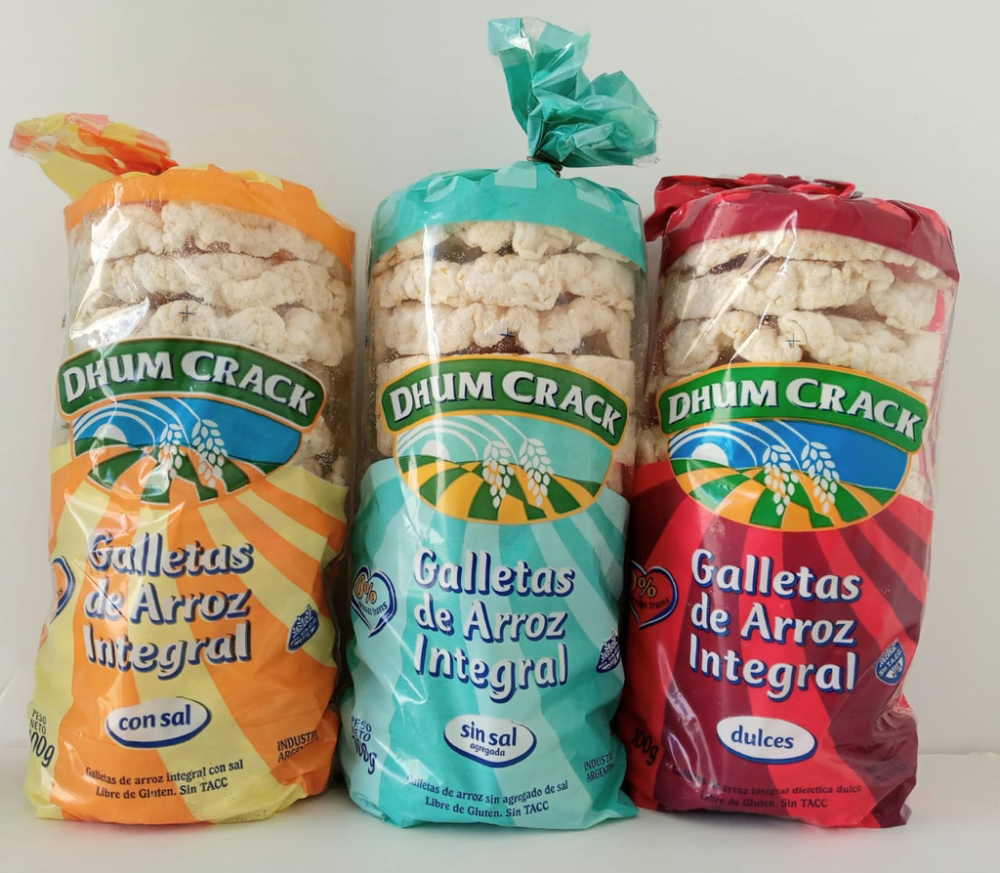
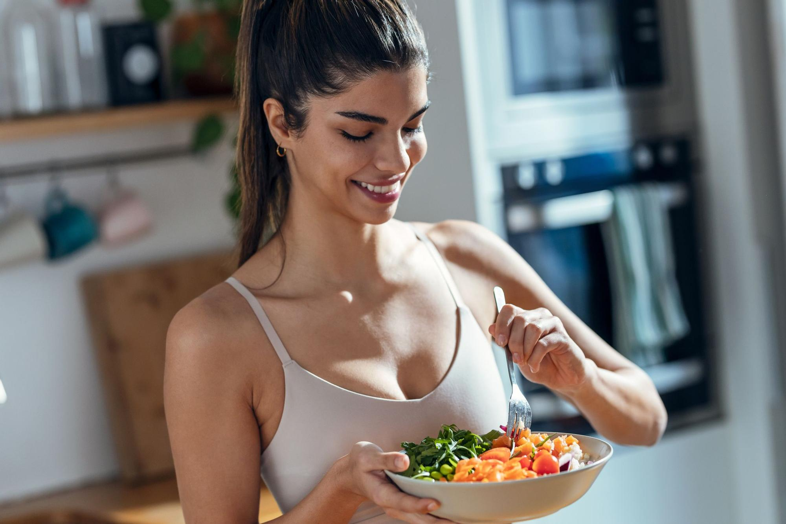
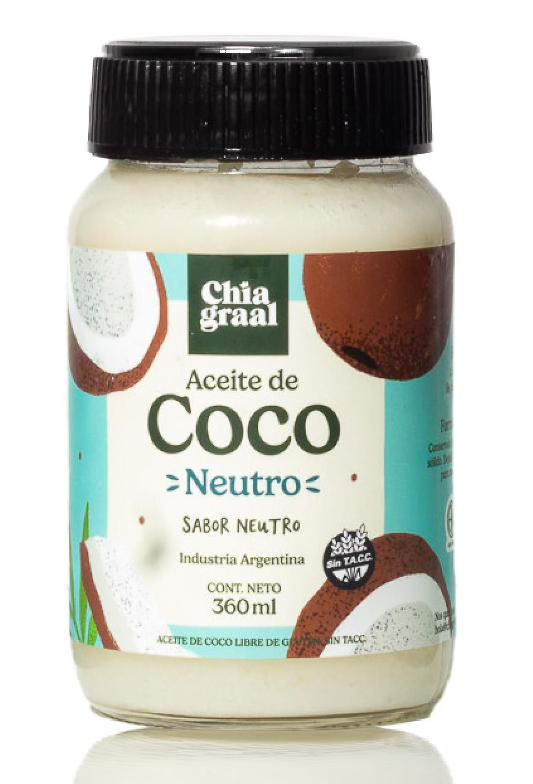
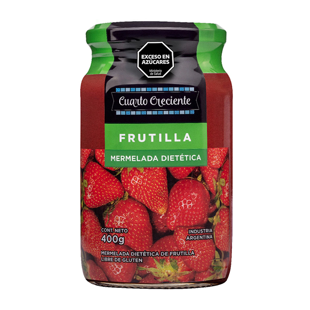
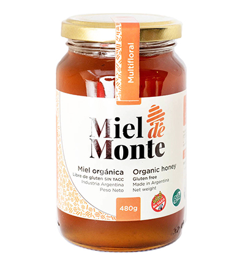

Volver a lo esencial
Adoptar una alimentación natural es una forma de reconectar con lo que nuestro cuerpo realmente necesita. En un mundo lleno de productos ultraprocesados, aditivos y conservantes, elegir alimentos reales —frutas, verduras, semillas, legumbres y cereales integrales— es una manera de volver a lo simple y recuperar la energía que muchas veces sentimos que nos falta. Una dieta basada en alimentos naturales aporta vitaminas, minerales y antioxidantes que ayudan a fortalecer el sistema inmunológico, mejorar la digestión y mantener un equilibrio interno más estable. No se trata de seguir una dieta estricta, sino de incorporar hábitos que te hagan sentir liviana, vital y en armonía con tu cuerpo.

Energía sostenida y bienestar emocional
Cuando elegimos alimentos frescos y nutritivos, nuestro cuerpo recibe energía de mejor calidad. Esto se traduce en mayor concentración, mejor rendimiento físico y una sensación de bienestar emocional más estable. Muchos estudios muestran que una alimentación rica en vegetales y alimentos sin procesar puede ayudar a reducir la ansiedad, mejorar el estado de ánimo y favorecer un descanso más reparador. La relación entre lo que comemos y cómo nos sentimos es profunda, y una dieta natural puede ser un gran aliado para equilibrar emociones y reducir el estrés cotidiano.
Salud digestiva y piel radiante
La digestión es uno de los procesos más importantes del cuerpo, y una alimentación natural la favorece enormemente. Alimentos ricos en fibra, como frutas, verduras y semillas, ayudan a regular el tránsito intestinal, reducir la hinchazón y mejorar la absorción de nutrientes. Además, la piel refleja lo que comemos. Una dieta natural contribuye a una piel más luminosa, hidratada y uniforme. Los antioxidantes presentes en los alimentos frescos ayudan a combatir los radicales libres, retrasar el envejecimiento y mejorar la elasticidad de la piel.
Un estilo de vida flexible y sostenible
Lo mejor de una alimentación natural es que no exige perfección. No se trata de eliminar todo lo que te gusta, sino de encontrar un equilibrio que funcione para vos. Podés empezar incorporando más vegetales, reemplazando snacks procesados por opciones reales o eligiendo cereales integrales en lugar de refinados. Este enfoque es flexible, accesible y sostenible a largo plazo. No busca imponer reglas rígidas, sino acompañarte en un camino de bienestar que respete tus tiempos, tus gustos y tu estilo de vida.


